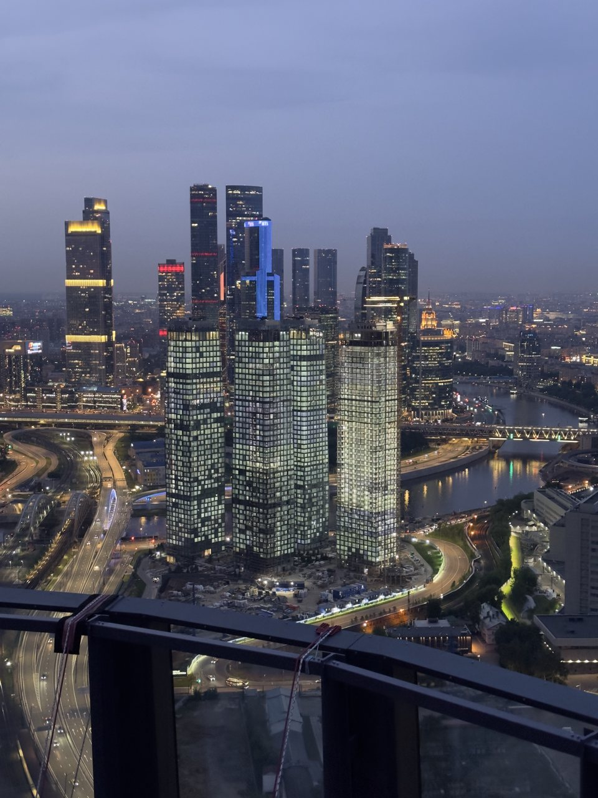
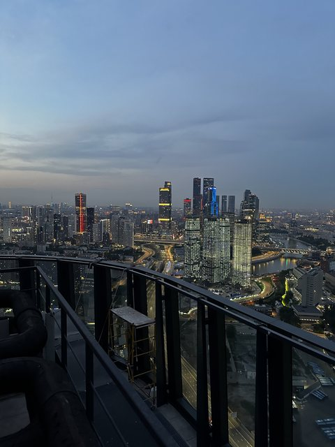
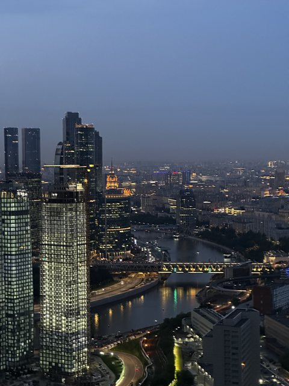
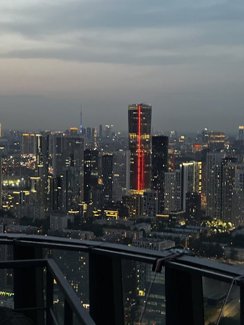
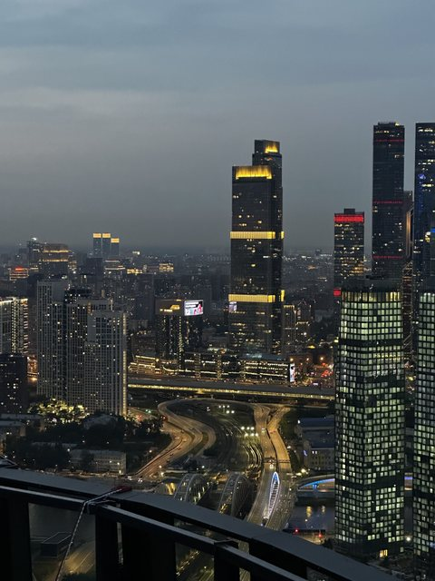

Максимальная высота
Крыша «Фили 60 этажей»
Самая высокая точка в нашем каталоге: отсюда на башни Москва-Сити смотришь почти вровень, а город внизу превращается в карту из огней.
Эту крышу мы сейчас не предлагаем — посмотрите другие в каталоге.
Что видно с этой крыши
Главное отличие этой точки — высота. С 60 этажей деловой центр виден не снизу вверх, а почти на одном уровне: башни стоят напротив, и хорошо читается, как они расставлены относительно друг друга и реки.
Внизу разворачивается вся остальная Москва: изгиб Москва-реки с мостами, транспортные развязки со светящимися нитками машин, кварталы новостроек. С такой высоты город выглядит именно картой — видно структуру, а не отдельные дома.
Вечером это самая эффектная точка каталога: подсвеченные башни, огни набережных и уходящие вдаль линии дорог. На наших кадрах хорошо видно, как светится каждый этаж делового центра.
Когда лучше приходить
Вечер и сумерки — ради огней. Сразу после захода солнца небо ещё синее, а город уже светится: это лучшее сочетание для кадров с такой высоты.
Кому подойдёт
Для тех, кто хочет максимальную высоту и панораму «как из самолёта». Если выбираете между Филями и Филями 60 этажей — здесь масштаб, там ближе и камернее.
Как попасть
Подняться можно только вместе с сопровождающим: мы встречаемся у дома в назначенное время, поднимаемся и коротко объясняем правила на площадке. Точный адрес и точку встречи присылаем после подтверждения записи — заранее их не публикуем. Что взять с собой: удобную нескользящую обувь и тёплый слой, вечером на высоте прохладнее, чем на улице. Подробнее — в гиде «Как попасть на крышу в Москве».
Фотографии
Кадры с этой крыши
Все снимки сделаны нами на этой локации — они показывают, что реально видно с точки.




FAQ
Вопросы про эту крышу
Насколько это высоко?
Точка находится на уровне примерно 60 этажей — это самая высокая крыша в нашем каталоге. Башни Москва-Сити отсюда видны почти вровень.
Чем отличается от обычной крыши в Филях?
Масштабом. С обычной крыши Сити виден снизу вверх вместе с жилыми кварталами, отсюда — на одном уровне и вместе с рекой, развязками и огнями до горизонта.
Подойдёт ли, если боишься высоты?
Скорее нет. Это самая высокая точка каталога, и ощущение высоты здесь сильное. Если есть сомнения — выберите крышу пониже, например в Филях или на Шелепихе.
Над городом